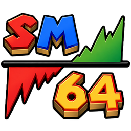
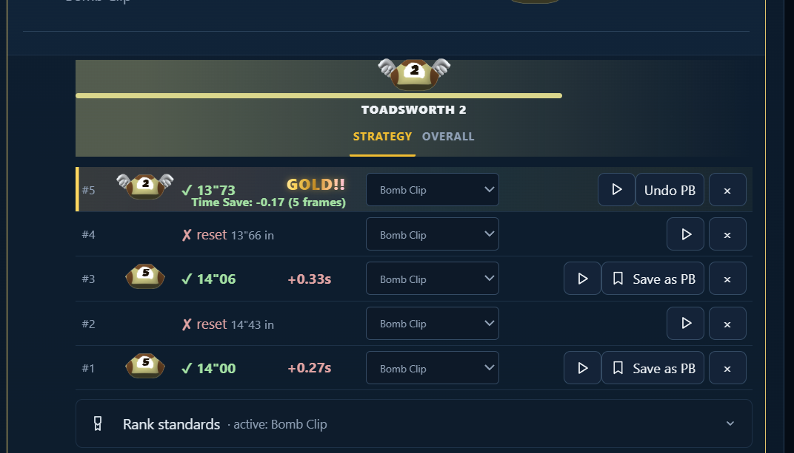
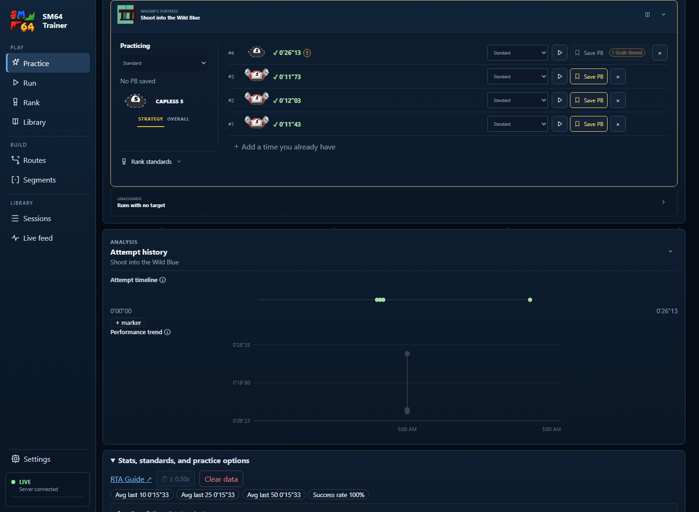

Catch every improvement.
Every attempt gets tracked. Eligible new bests become GOLDs, with ranks and saved replays that make your progress visible.

SM64Trainer Support (optional)THE SUPER MARIO 64 PRACTICE COMPANION
Less bookkeeping. More “one more try.”
Track your PBs, race community ghosts, and see exactly how your practice is paying off.
Free. Open source. Always.
What do I need to get started?
BUILT FOR THE WAY YOU ALREADY PRACTICE
01 / KEEP YOUR HEAD IN THE GAME
Was that faster? What went wrong? What should you try next?
Your next attempt starts with a little more information.

Every attempt gets tracked. Eligible new bests become GOLDs, with ranks and saved replays that make your progress visible.
Review your attempt alongside its controller inputs. Compare with a saved input template and spot the difference.
Explore community strategy examples in the Library, organized by rank. Import your Ultimate Star Sheet times and copy your new bests back.
02 / LEARN FROM EACH OTHER
Challenge a shared ghost directly in Project64. See someone else’s line, try to keep up, and turn a time on a spreadsheet into something you can learn from.
Inspired by Trackmania and the Ultimate Star Sheet, ghosts give the grind a familiar face. Your best attempt could be someone else’s next breakthrough.
How ghost sharing works03 / THERE’S ALWAYS ANOTHER STEP
A clear ladder for the things you practice.
Community time standards turn improvement into a target you can see—and a rank you can work toward.
Five divisions per tier. Climb from 5 to 1, then into the next cap.
What goes into a rank?04 / YOUR NEXT PRACTICE SESSION STARTS HERE
The app walks you through setup. You don’t need Python or a new practice ROM.
Get the Windows installer and open SM64 Trainer.
Download for WindowsUse Discord or Twitch to give your shared ghosts a name and an owner.
Follow the wizard to install Practice Replay, the graphics plugin for matched inputs and in-game ghosts.
Open Usamune, choose a star or strategy, and chase your next GOLD.
Windows 11 (64-bit), or Windows 10 with the WebView2 runtime. Project64 1.6 and your own Usamune v1.93u (US) practice ROM, running windowed.
Frame-matched replay capture uses an NVIDIA GPU with NVENC. The setup wizard checks your system. Other recording paths are available, but they don’t provide the same frame-matched inputs. ROMs are not included.
05 / FAIR QUESTIONS
You’re adding a tool to a setup you care about. Here’s what it does, what gets shared, and why it exists.
Read the source on GitHubSM64 Trainer is open source under GPL-3.0-or-later. The official releases include SHA-256 checksums, and the app verifies downloaded updates before applying them. The installer is currently unsigned, so Windows SmartScreen may show a warning.
Download from the official GitHub release linked here. If you choose to install that release, select More info → Run anyway in SmartScreen. You can inspect the source and release files yourself; a checksum verifies file integrity, not a blanket security guarantee.
Practice tooling activates for the supported Usamune ROM. With vanilla SM64, another hack, or another game, the plugin uses its GLideN64 rendering path and the trainer does not track or record.
Your previous graphics plugin stays installed. You can restore it through Manage Practice Replay → Remove Practice Replay with Project64 closed. For a run that needs your original setup, switch back to that plugin.
No. The trainer uses hardware video encoding to record practice replays. That’s why you may see GPU activity while it’s recording. There is no cryptocurrency mining feature.
Sign-in gives community ghosts an owner, lets other runners see who made them, and lets you manage your uploads. You authorize through the provider; the trainer does not ask for your Discord or Twitch password.
The community build needs an initial sign-in. Saved credentials let you keep practicing offline afterward. Saved sign-in credentials use Windows Credential Manager.
A ghost shares game poses, timing information, and optionally controller inputs, with your display name. It does not upload your ROM, videos, or complete practice history.
Signup explains and enables automatic ghost sharing. You can stop future uploads in Settings and separately withdraw existing ghosts. Copies that other players already downloaded cannot be recalled.
The nine tiers—from Capless to Mario—make a long practice journey easier to navigate. Each has five divisions, giving you smaller goals between milestones.
Strategy rank grades a time against that strategy’s standards. Overall rank combines progress across compatible strategies and community times. MARELO summarizes progress across the things you practice. Standards draw on community submissions and can evolve; they do not measure a fixed percentage of skill.
Completely free, open source, and always free. There are no paid ranks or features. Ko-fi is an optional way to help keep community server costs manageable. A tip does not change what you can do in the app.
Usamune’s developers already built an incredible practice tool. The goal is to build on their work and make it easy for runners to adopt better feedback without changing how they practice.
The Ultimate Star Sheet inspired the tracking and progression system. This is a way to carry that community knowledge into a practice session, and help runners learn from each other.
THERE’S A GOLD IN YOUR FUTURE.
Free forever. Made for the community.